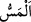
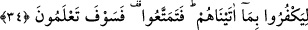

39. İnsanların mallarında artış olsun diye verdiğiniz herhangi bir faiz, Allah
katında artmaz. Allâh’ın rızâsını isteyerek verdiğiniz zekâta gelince, işte zekâtı
veren o kimseler, evet onlar (sevaplarını ve mallarını) kat kat arttıranlardır.
40. Allah, (o yüce varlıktır) ki sizi yaratmış, sonra rızıklandırmıştır; sonra O,
hayatınızı sona erdirecek, daha sonra da sizi (tekrar) diriltecektir. Peki sizin
(Allâh’a eş tuttuğunuz) ortaklarınız içinde bunlardan birini yapabilecek var mı?
Allah onların ortak koştuklarından münezzehtir ve yücedir.
“İnsanların” Âdemoğullarının, yâni Mekke müşriklerinin “başına bir sıkıntı” açlık,
kıtlık, yağmursuzluk, hastalık, fakirlik ve diğer belâ türlerinden kötü bir durum
“gelince,” ulaşınca “Rablerine yönelerek” putların onları giderme imkanı olmadığını
ve bu sıkıntıyı Allah’tan başkasının kendilerinden gidermeye güç yetiremeyeceğini
bildiklerinden başkasına duâ edip yalvarmayı bırakıp Allâh’a dönerek “O’na
yalvarırlar.”
el-Müfredât’ta der ki: “
” kelimesi, insanın başına gelen her türlü eziyet için
söylenir.”
“Sonra Allah, katından onlara bir rahmet” genişlik, zenginlik, sağlık ve benzerlerini
vermek sûretiyle başlarına gelen sıkıntıdan bir kurtuluş ve âfiyet “tattırınca, bakarsınız
ki onlardan bir gurup yine Rablerine ortak koşuyorlar.” Yâni onlardan bir topluluk
birdenbire kendilerini sıkıntıdan kurtarıp âfiyet veren Rablerine ortak koşarlar, yâni
belâdan kurtulma karşılığında bu şekilde davranırlar.
Ortak koşma fiilinin onların bir kısmına tahsis edilmesi, onların bazıları böyle
yapmadığı içindir. Tıpkı “Allah onları karaya çıkararak kurtardığı vakit içlerinden
bir kısmı orta yolu tutar.” (Lokman, 31/32) âyetinde olduğu gibi. Yâni onlar orta yolda
kalıp devam eder veya genel olarak payını aldığı için inkârda orta yolu tutar.
34. Kendilerine verdiklerimize nankörlük etsinler bakalım! Haydi safâ sürün;
ama yakında bileceksiniz!
“Kendilerine verdiklerimize” sıkıntılardan kurtuluş ve âfiyet nîmetine “nankörlük
etsinler bakalım! Haydi” ecellerinizin vakti gelip çatana kadar küfrünüzle biraz “safa
sürün.” Son cümlede gâib (üçüncü şahıs) siygasından hitâba (ikinci şâhıs) siygasına
geçilmiştir (iltifât).
Keşfü’l-esrâr’da der ki: “Yiyin ve ömrünüzü geçirin/tamamlayın.” Kâşifî’de şöyle
demiştir: “Ey kâfirler, dünyâ nîmetlerinden birkaç gün yiyin.”
“Ama yakında” âhirette, safâ sürmenizin sonucunu “bileceksiniz!” O ise cezâya dûçar